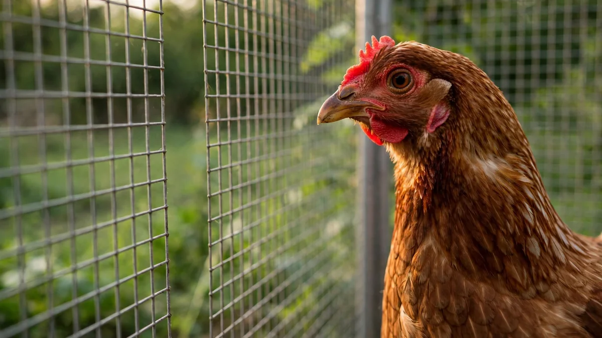
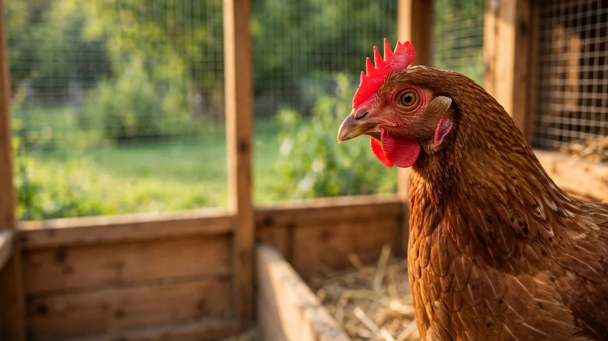
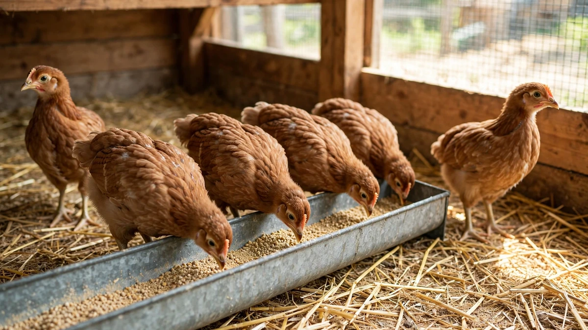
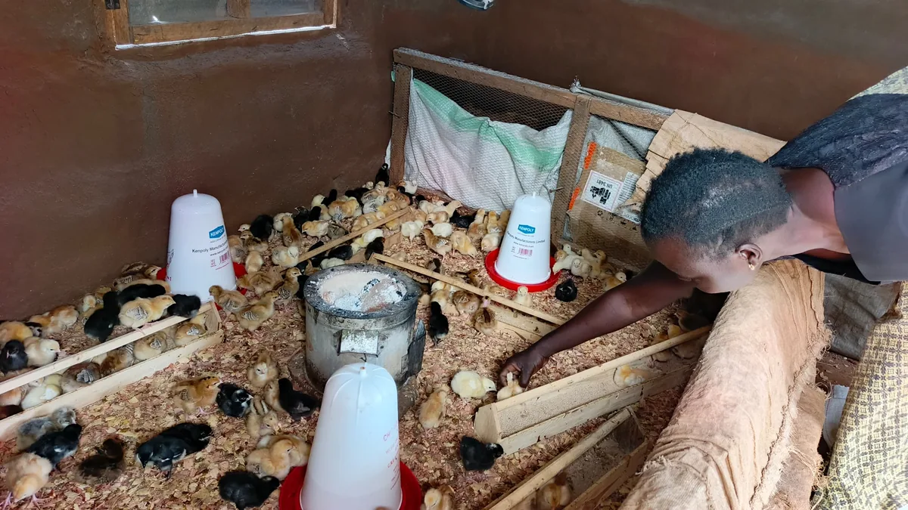
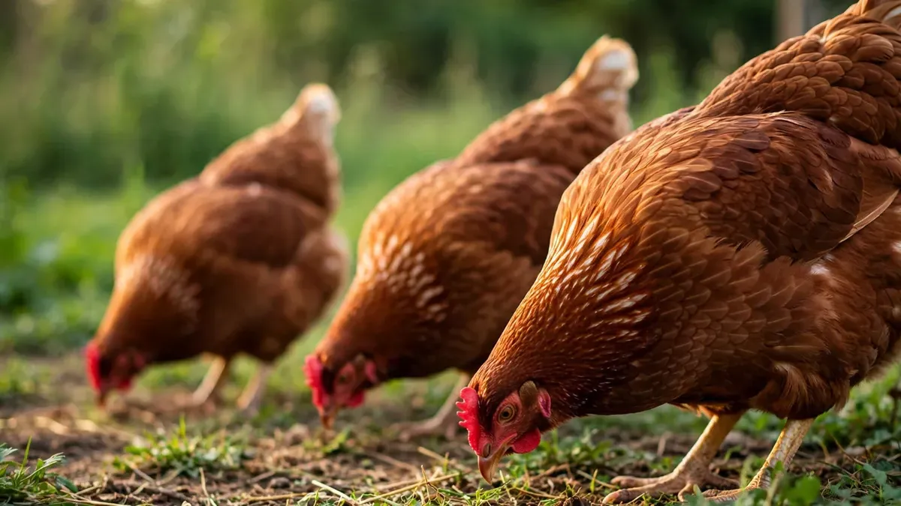
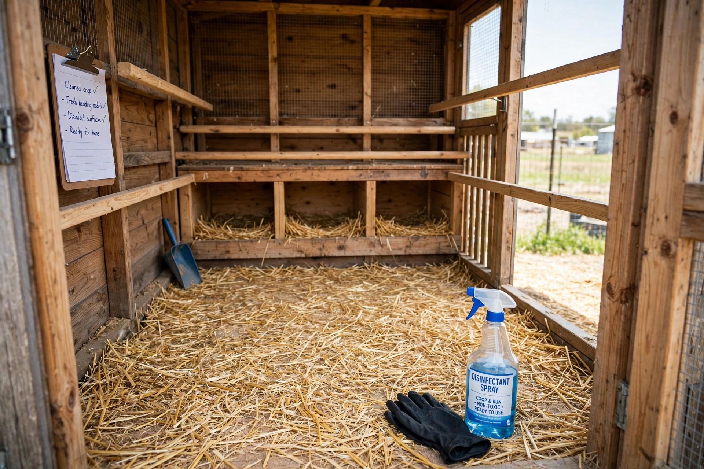
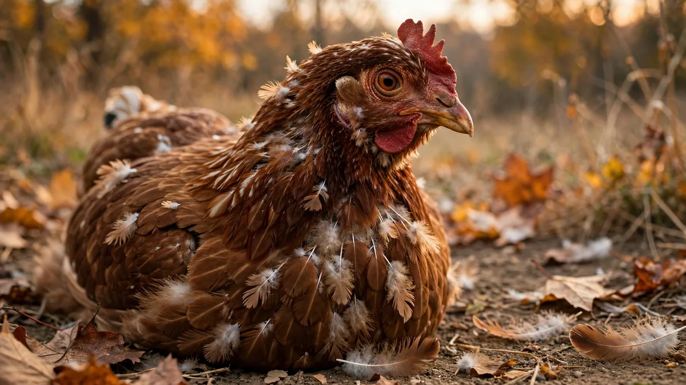
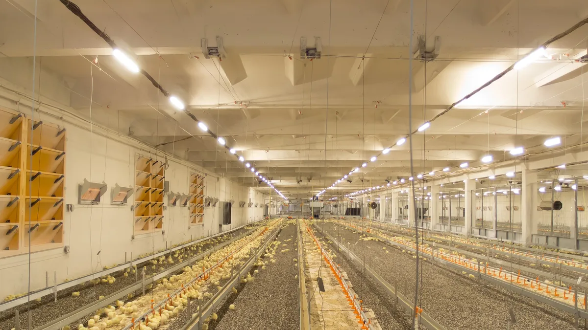
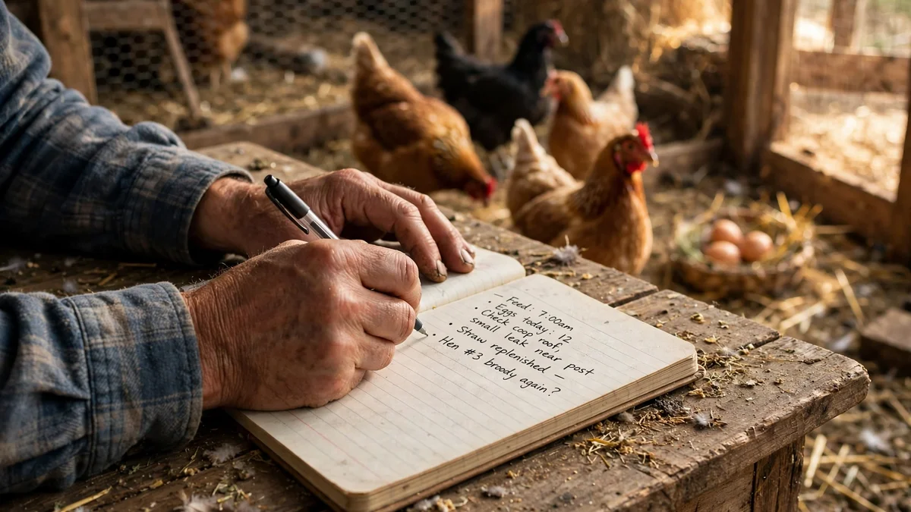

Salud
Gripe aviar en gallinas: signos, aviso y prevención
Qué es la gripe aviar, qué signos da en gallinas, cómo se contagia, cómo prevenirla y por qué hay que avisar a la autoridad ante la mínima sospecha.
Leer artículo →Artículos
Página 6. Textos cortos y prácticos para tu granja. Encontrarás explicaciones prácticas y sus fuentes de información.

Salud
Qué es la gripe aviar, qué signos da en gallinas, cómo se contagia, cómo prevenirla y por qué hay que avisar a la autoridad ante la mínima sospecha.
Leer artículo →
Salud
Enfermedad de Newcastle en gallinas: signos respiratorios y nerviosos, cómo se contagia, cómo prevenirla y por qué es de declaración obligatoria.
Leer artículo →
Salud
Enfermedad de Marek: la pata hacia delante y la otra hacia atrás. Qué es, cómo se contagia por el polvo y cómo prevenirla en tu gallinero.
Leer artículo →
Salud
Colibacilosis aviar: la E. coli que aprovecha el mal ambiente, el ombligo de los pollitos y otras enfermedades. Signos, causas y prevención.
Leer artículo →
Salud
Cólera aviar: muertes repentinas, barbillas hinchadas y cojeras. Cómo entra en el gallinero, cómo prevenirlo y cuándo llamar al veterinario.
Leer artículo →
Salud
Bronquitis infecciosa en gallinas: tos, caída de puesta y huevos deformes. Cómo se contagia, cómo prevenirla y cuándo llamar al veterinario.
Leer artículo →
Salud
Aspergilosis aviar: el hongo de la cama y el pienso con moho que causa dificultad respiratoria en pollitos y gallinas. Causas y prevención.
Leer artículo →
Gallinas ponedoras
En otoño muchas gallinas pierden plumas y dejan de poner. Es la muda: qué es, cuánto dura y cómo ayudarlas a pasarla rápido y bien.
Leer artículo →
Gallinas ponedoras
Revisa las horas de luz de tus ponedoras, registra los cambios de puesta y planifica la iluminación según la edad y el manejo del lote.
Leer artículo →Gallinas ponedoras
Cuándo renovar el lote: registros, costes y preparación del siguiente grupo.
Leer artículo →
Gallinas ponedoras
Qué anotar cada día (postura, bajas, pienso), cómo calcular tus números y una plantilla lista para copiar.
Leer artículo →Para empezar
Si empiezas desde cero, compara las actividades. Si ya tienes aves, revisa el espacio o prepara tu próxima incubación.
Compara la producción de huevos, pollos de engorde y reproducción. Elige una actividad y prepara tu presupuesto antes de comprar aves.
Organiza el alojamiento según las aves y el sistema de cría. Consulta la guía y usa la calculadora para planificar tu espacio.
Consulta los plazos de incubación de cada especie y qué preparar antes de cargar los huevos. Los días son orientativos y no garantizan nacimientos.
El curso es gratis y va paso a paso.